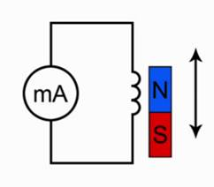
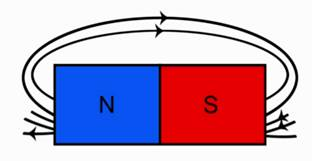
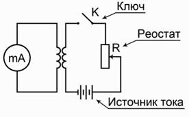
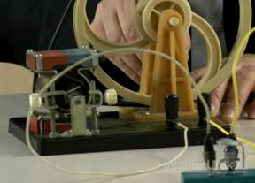

Цель – изучение явления электромагнитной индукции.
Оборудование
Рис.1 Экспериментальное оборудование
Начнем лабораторную работу со сбора установки. Чтобы собрать схему, которую мы будем использовать в лабораторной работе, присоединим моток-катушку к миллиамперметру и используем магнит, который будем приближать или удалять от катушки. Одновременно с этим мы должны вспомнить, что будет происходить, когда будет появляться индукционный ток.
Рис. 2. Эксперимент 1
Подумайте над тем, как объяснить наблюдаемое нами явление. Каким образом влияет магнитный поток на то, что мы видим, в частности происхождение электрического тока. Для этого посмотрите на вспомогательный рисунок.
Рис. 3. Линии магнитного поля постоянного полосового магнита
Обратите внимание, что линии магнитной индукции выходят из северного полюса, входят в южный полюс. При этом количество этих линий, их густота различна на разных участках магнита. Обратите внимание, что направление индукции магнитного поля тоже изменяется от точки к точке. Поэтому можно сказать, что изменение магнитного потока приводит к тому, что в замкнутом проводнике возникает электрический ток, но только при движении магнита, следовательно, изменяется магнитный поток, пронизывающий площадь, ограниченную витками этой катушки.
Следующий этап нашего исследования электромагнитной индукции связан с определением направления индукционного тока. О направлении индукционного тока мы можем судить по тому, в какую сторону отклоняется стрелка миллиамперметра. Воспользуемся дугообразным магнитом и увидим, что при приближении магнита стрелка отклонится в одну сторону. Если теперь магнит двигать в другую сторону, стрелка отклонится в другую сторону. В результате проведенного эксперимента мы можем сказать, что от направления движения магнита зависит и направление индукционного тока. Отметим и то, что от полюса магнита тоже зависит направление индукционного тока.
Обратите внимание, что величина индукционного тока зависит от скорости перемещения магнита, а вместе с тем и от скорости изменения магнитного потока.
Вторая часть нашей лабораторной работы связана будет с другим экспериментом. Посмотрим на схему этого эксперимента и обсудим, что мы будем теперь делать.
Рис. 4. Эксперимент 2
Во второй схеме в принципе ничего не изменилось относительно измерения индукционного тока. Тот же самый миллиамперметр, присоединенный к мотку катушки. Остается все, как было в первом случае. Но теперь изменение магнитного потока мы будем получать не за счет движения постоянного магнита, а за счет изменения силы тока во второй катушке.
В первой части будем исследовать наличие индукционного тока при замыкании и размыкании цепи. Итак, первая часть эксперимента: мы замыкаем ключ. Обратите внимание, ток нарастает в цепи, стрелка отклонилась в одну сторону, но обратите внимание, сейчас ключ замкнут, а электрического тока миллиамперметр не показывает. Дело в том, что нет изменения магнитного потока, мы уже об этом говорили. Если теперь ключ размыкать, то миллиамперметр покажет, что направление тока изменилось.
Во втором эксперименте мы проследим, как возникает индукционный ток, когда меняется электрический ток во второй цепи.
Следующая часть опыта будет заключаться в том, чтобы проследить, как будет изменяться индукционный ток, если менять величину тока в цепи за счет реостата. Вы знаете, что если мы изменяем электрическое сопротивление в цепи, то, следуя закону Ома, у нас будет меняться и электрический ток. Раз изменяется электрический ток, будет изменяться магнитное поле. В момент перемещения скользящего контакта реостата изменяется магнитное поле, что приводит к появлению индукционного тока.
В заключение лабораторной работы мы должны посмотреть на то, как создается индукционный электрический ток в генераторе электрического тока.
Рис. 5. Генератор электрического тока
Главная его часть – это магнит, а внутри этих магнитов располагается катушка с определенным количеством намотанных витков. Если теперь вращать колесо этого генератора в обмотке катушки будет наводиться индукционный электрический ток. Из эксперимента видно, что увеличение числа оборотов приводит к тому, что лампочка начинает гореть ярче.